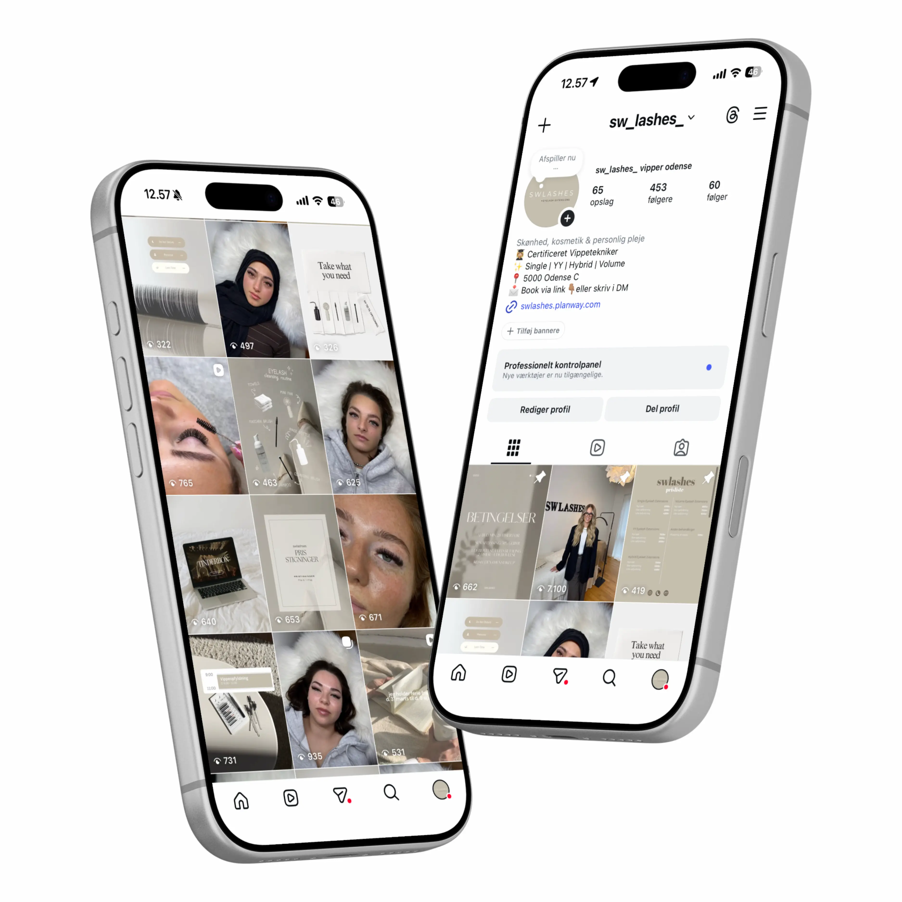
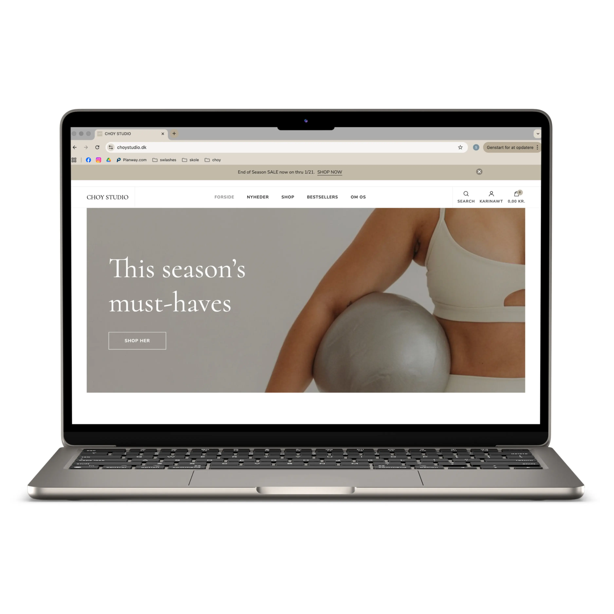
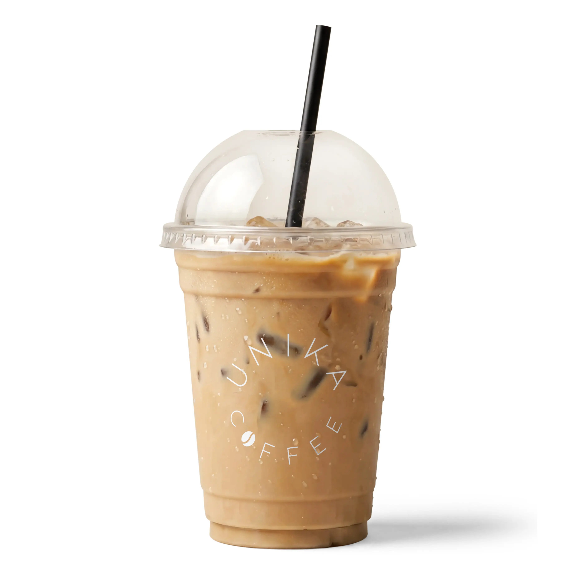
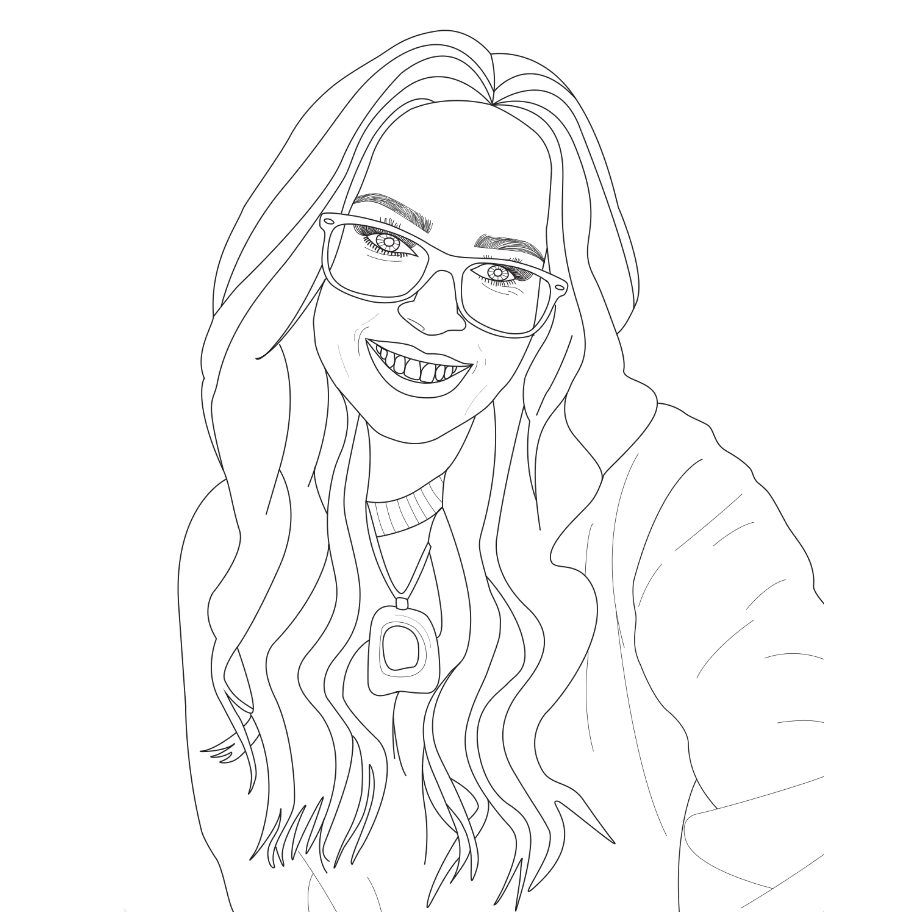
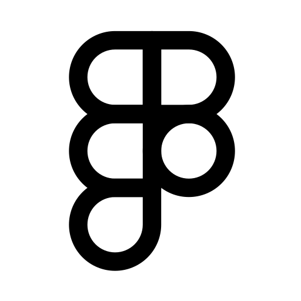
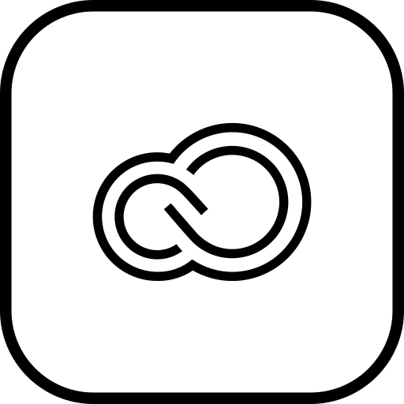
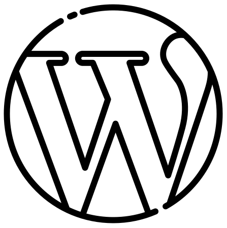
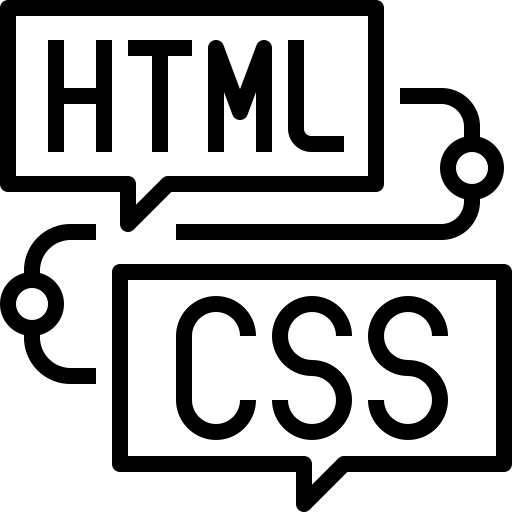

Social Media Design
Visuelt Instagram-univers med fokus på æstetik, branding og sammenhæng i feedet.
Jeg hjælper brands og virksomheder med at skabe stærke visuelle identiteter gennem æstetisk design, branding og digitale løsninger, hvor brugeroplevelse og detaljer er i fokus.
LAD OS ARBEJDE SAMMENBRANDING & VISUEL IDENTITET
WEBDESIGN & BRUGEROPLEVELSE
SOCIAL MEDIA DESIGN
GRAFISK DESIGN
MINE

Visuelt Instagram-univers med fokus på æstetik, branding og sammenhæng i feedet.

Design og udvikling af hjemmeside til upcoming yogabrand med fokus på roligt og moderne udtryk.

Visuel kampagne udviklet som konceptarbejde med fokus på æstetik, branding og luksuriøst udtryk.

Udvikling af logo og grafisk design til takeaway-univers med fokus på identitet og genkendelighed.

Design af visitkort til yogabrand med fokus på æstetik, detaljer og et eksklusivt visuelt udtryk.

Digital portrætilustration udviklet i Adobe Illustrator med fokus på detaljer og formgivning.
JEG BRUGER DISSE
Gennem min uddannelse samt personlige interesser og kreative projekter har jeg opnået erfaring og styrker i følgende programmer og værktøjer:

Figma

Adobe Creative Cloud

WordPress

HTML & CSS